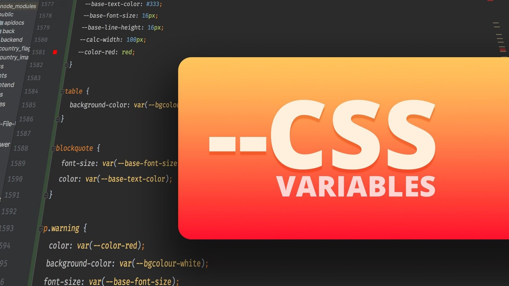
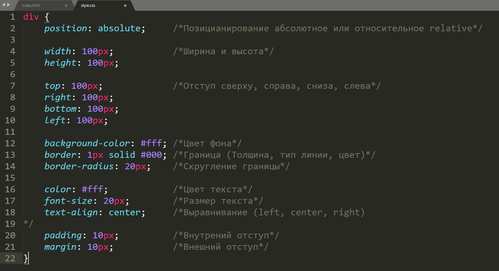

Python — это язык программирования, который широко используется в интернет-приложениях, разработке программного обе;спечения, науке о данных и машинном обучении (ML). Разработчики используют Python, потому что он эффективен, прост в изучении и работает на разных платформах. Программы на языке Python можно скачать бесплатно, они совместимы со всеми типами систем и повышают скорость разработки.
Он ориентирован на повышение производительности разработчика, читаемости кода и его качества, а также на обеспечение переносимости написанных на нём программ. Python является полностью объектно-ориентированным языком. Его особенностью является выделение блоков кода отступами. Синтаксис ядра языка минималистичен, за счёт чего на практике редко возникает необходимость обращаться к документации. Язык используется в анализе данных, машинном обучении, DevOps и веб-разработке, а также в других сферах, включая разработку игр.
Официальный сайт Python - This is a link
HTML (от английского HyperText Markup Language) — это язык гипертекстовой разметки текста. Он нужен, чтобы размещать на веб-странице элементы: текст, картинки, таблицы и видео. Когда вы заходите на сайт, браузер подгружает HTML-файл с информацией о структуре и контенте веб-страницы. HTML как бы выстраивает визуальный фундамент сайта, но не «запускает» сайт самостоятельно.
HTML состоит из тегов, которые обозначают различные элементы на странице и их связи друг с другом. Когда веб-страница с HTML-кодом загружается в браузер, браузер читает и отображает ее согласно описанной структуре и содержанию, давая пользователю возможность интерактивно взаимодействовать со страницей. HTML - это язык без которого не может существовать веб-сайт. Это основа всех веб-страниц, которые мы видим в интернете. Без HTML не будет структуры и содержания для веб-страницы, так же как без фундамента не будет здания.
Офицальный сайт HTML - This is a link
CSS — это язык описания внешнего вида документа. Он отвечает за то, как выглядят веб-страницы: цвет фона и декоративных элементов, размер и стиль шрифтов. Термин расшифровывается как Cascading Style Sheets (каскадные таблицы стилей). CSS взаимодействует с другим языком разметки — HTML, который отвечает за размещение элементов на странице.
CSS (Cascading Style Sheets) - это язык стилей, который используется для описания внешнего вида документа, написанного с использованием языка разметки, такого как HTML или XML. Он позволяет разделить содержимое документа от его внешнего вида, что позволяет легко изменять внешний вид сайта без изменения самого содержимого. В CSS есть три основные сущности: селекторы, правила и значения. Селекторы используются для выбора элементов на странице, которые нужно изменить. Существует множество различных типов селекторов, таких как теги, классы и идентификаторы.
Официальный сайт - This is a link
 